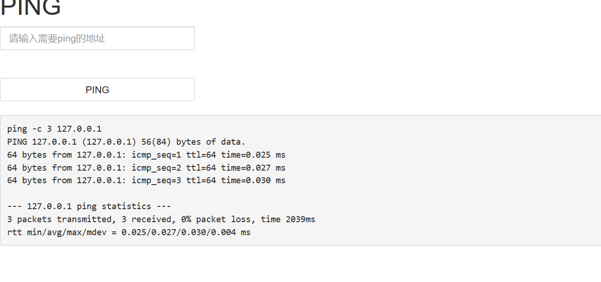

攻防世界-command_execution
文章发布时间:
最后更新时间:
文章总字数:
预计阅读时间:
最后更新时间:
文章总字数:
545
预计阅读时间:
2 分钟
题目描述：
小宁写了个ping功能,但没有写waf,X老师告诉她这是非常危险的，你知道为什么吗。
题目解题：
进入页面如图所示，题目告诉我们这关没写waf，所以随便输入命令即可进行命令执行
1 | |
先用本机127.0.0.1去ping一下看

发现有回显，说明ping成功了。然后我们可以将输入参数截断从而让其运行危险的参数。
常见管道连接符如下：
| ; | A;B | 先执行A，再执行B |
|---|---|---|
| & | A&B | 简单拼接，A B之间无制约关系 |
| | | A|B | 显示B的执行结果 |
| && | A&&B | A执行成功，然后才会执行B |
| || | A||B | A执行失败，然后才会执行B |
那我们输入：127.0.0.1|ls看看
成功执行，那么找一下flag，find / name "flag*"
查看flag.txt即可
ICMP是Internet控制报文协议。它是TCP/IP协议簇的一个子协议，用于在IP主机、路由器之间传递控制消息。控制消息是指网络通不通、主机是否可达、路由是否可用等网络本身的消息。
而ICMP协议主要是靠ping工具来实现的。使用ping了之后会收到来自ip地址（也有可能是通过DNS把url给解析为ip地址）的回复。而ping本地的回环地址（127.0.0.1）的操作是检查本机的网卡，TCP/IP配置是否正确，也是使用ping工具的首要步骤。